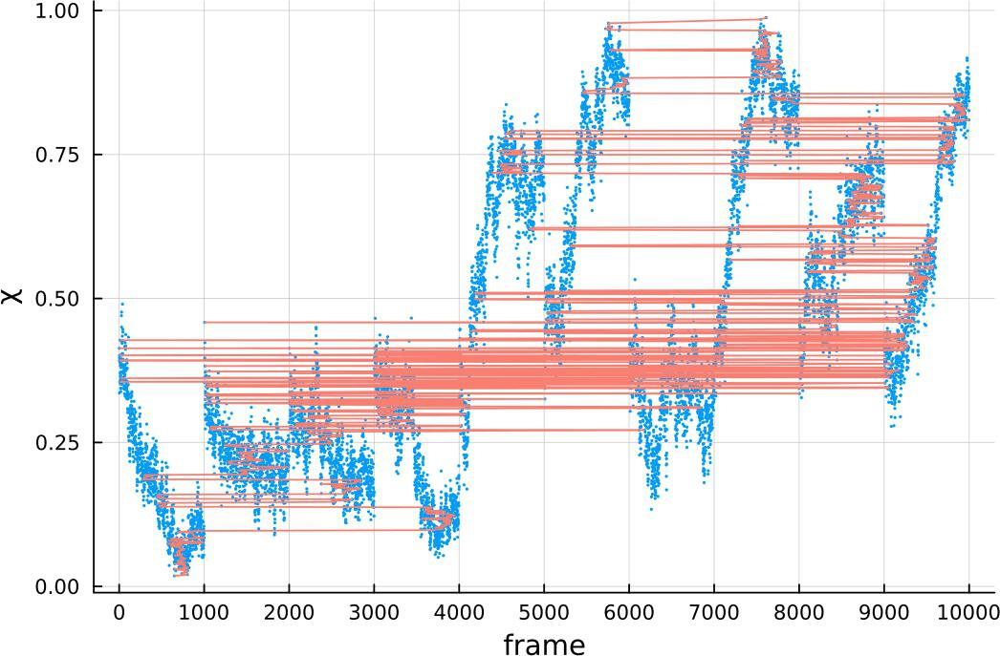
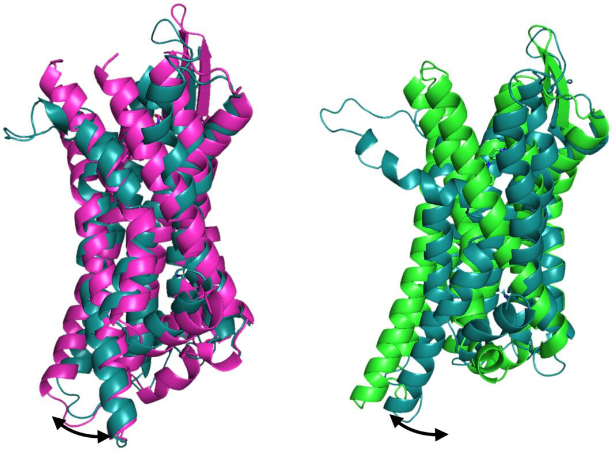

4 Illustrative example: opioid receptor
To illustrate the added value of χ computation, we will show an molecular dynamics (MD) example, which is part of a pharmaceutical project. We first learned the χ function from molecular simulation trajectories and applied the described reaction path extraction along χ to a high-dimensional molecular system consisting of 4,734 atoms. The application background is given by understanding pain relief using opioids. Strong painkillers like morphine and fentanyl act upon a special type of receptor in the body known as the (MOR). This receptor is part of the family of opioid receptors and is a G-protein coupled receptor found in various parts of the body such as brain, spinal chord, and gastrointestinal tract [10]. The indiscriminate activation of the MOR across the whole body is one of the causes of severe side-effects of this family of strong painkillers [1].
However, it is proven that chemical changes at site of inflammation cause the creation of a micro environment [13]. The knowledge about the local micro environment can be used to design peripherally restricted strong pain killers with potentially less side-effects [18]. Different micro environments may lead to different dynamics of the MOR. One possible chemical change of the MOR in inflamed tissue postulates the formation of disulfide bonds as the concentration of reactive oxygens species goes up.
4.1 Algorithmic details
Our input data is taken from 10 different simulations of the MOR. After the primary proximity analysis on the active structure of the MOR (Protein Data Bank (PDB) ID 8EF5), a disulfide bond was introduced in the inactive structure of the MOR in between location CYS159 and CYS251 (Protein Data Bank ID 7UL4) [22], [14]. Ten simulations (with explicit water and with a lipid-bilayer for the MOR) were run. Each simulation spans an interval of 100 nanoseconds, totaling to 1 microsecond.
After simulation, pairwise distances over all α-carbons that can be observed to be closer then a threshold ( ) at least once over the simulation time (normalized to mean 0 and standard deviation 1) serve as input features of the corresponding neural network of the ISOKANN algorithm [16]. The action of the Koopman operator in (4.24) is estimated with one sample each forward and backward along the time axis, justified by the reversibility of the system. This is used to train the χ-function. With taking forward and backward steps, it is avoided that χ has all its mass in the terminal point. A unidirected trajectory, that is, if only forward or only backward steps were taken, would “transport” the χ values along the trajectory to the final point in the estimation of the Koopman operator: The Koopman estimation of each point in (4.24) would simply be the χ value at the trajectories predecessors point. Over time, all points would attain the value of the first point, whereas the shift-scale would enforce the last point to remain distinct.
The neural network is a multilayer perceptron with 3 fully connected hidden layers of size (6161,336,18) with sigmoid activation functions and a single linear output neuron. For the optimization, we use ADAM with a learning rate of with a regularization of and a mini-batch size of 128. After training χ for 30,000 iterations, we concluded convergence based on the plateauing of the mean squared error of the ISOKANN residuals at around . The described shortest path is extracted with resulting in 1,231 selected frames.
Using a large regularization, for the neural network enforces a smooth structure to the χ function, which may also be understood as a smoothing of the data and thereby artificially connecting spatially adjacent samples. With regularization, ISOKANN thus isolates the spatially large transitions, which amount to macroscopic changes.
4.2 Application to MOR
ISOKANN serves as an efficient tool to analyze rare events in the simulation of the μ-opioid receptor. As mentioned earlier, finding a solution function χ of (4.20) with a low exit rate corresponds to the identification of a “reaction coordinate.” In Figure 4.2, the resulting χ-values along 10 independent molecular simulations are shown (blue dots). One can see that the lowest and highest values of χ are not to be found within one trajectory. Using ISOKANN, it is possible to extract the “dynamically most distant” frames from the simulation; see Figure 4.3. Indeed the χ-values correspond to a reaction coordinate for the transition from an inactive to an active macro state of MOR. Although none of the 10 trajectories simulates this process completely, we can extract the time-determining steps along the reaction path by using the shortest path routine described in Section 3. The picked path is rather small in length (1,231 frames, orange in Figure 4.2) as compared to entire trajectory of 10,000 stored frames. It displays a physically plausible and compellingly smooth transition between the extremal states.

Figure 4.2 The membership value for each state (frame) x obtained from 10 independent simulations, with each simulation comprising 1,000 frames. The y-axis represents the macroscopic transition, showing that different trajectories cover distinct segments of this transition while exhibiting partial overlap with other trajectories. The extracted reaction path (orange line) progresses monotonously from to while maintaining (not depicted) spatially smooth transitions. Note that it incorporates the data from among all 10 simulations and even jumps between them where facilitated by small spatial distances in Ω.

Figure 4.3 Visualization of the MOR states (teal) at the beginning (left) and end (right) of the reaction path from Figure 4.2 (orange). The superimposed purple and green structures are known to be representative of the inactive (PDB 7UL4), respectively, active (PDB 8EF5) states. We can see that ISOKANN isolates close similar to these known metastabilities from the simulation trajectories without their a priori knowledge. The reactive path clearly displays the tilting motion (black arrow) undergone by the transmembrane helix 6.
Whereas it was not at all clear whether the supplied simulation data was sufficient a priori, the resulting path identifies the known crystal structures and a path between them. Figure 4.3 displays the modified MOR (teal) with a disulfide bond at the starting point of the reaction path aligning with the inactive structure of the unmodified, natural state of the MOR (purple). Laboratory experiments suggest partial activation of the MOR, which is confirmed by the shortest path analysis in the tilting movement of the transmembrane helix 6 (bottom left) outwards like it is seen in the fully activated, natural MOR crystal structure (green). It is noteworthy that the start and end points of the reactive path were determined without prior knowledge of the crystal structures. Extracting these extremal states and the reaction path from the raw trajectory data frame-by-frame would pose a considerable challenge.
Using a linear regression to estimate in (4.20), we can compute the exit rate for a given lag time by (4.22) resulting in .